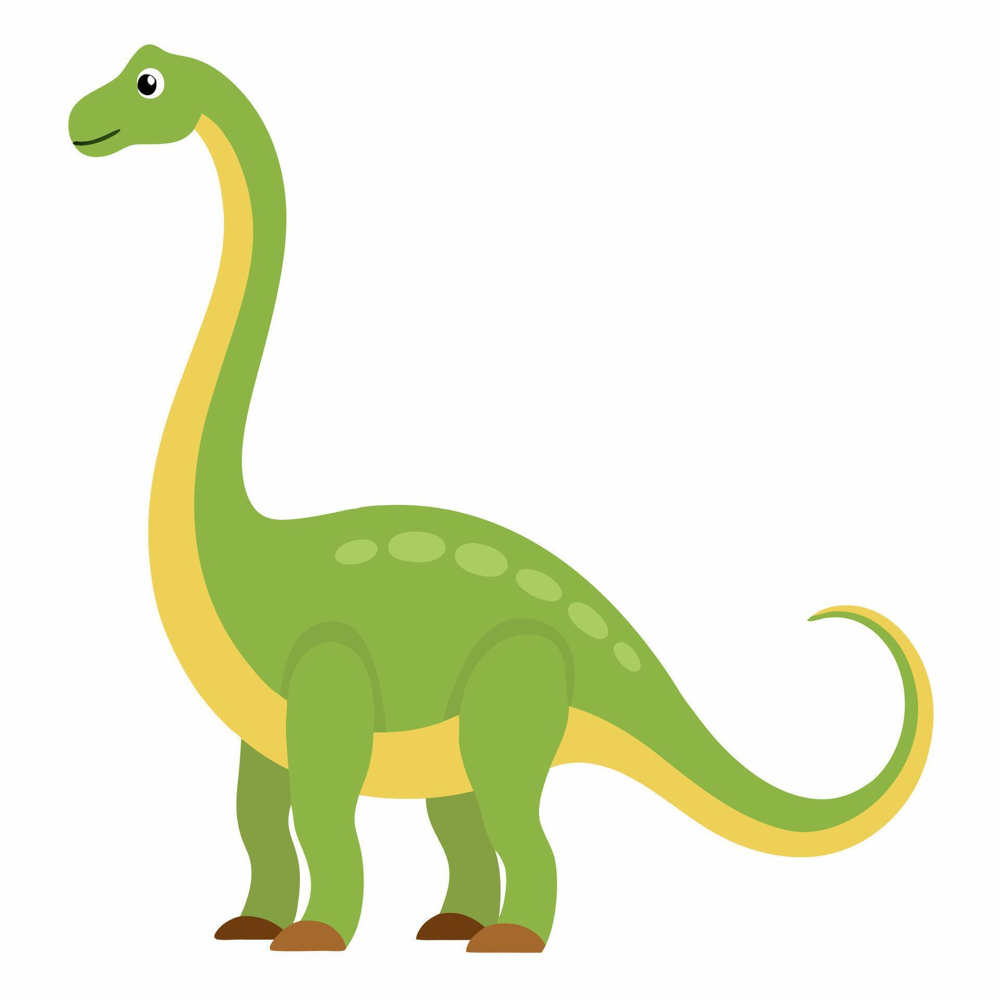
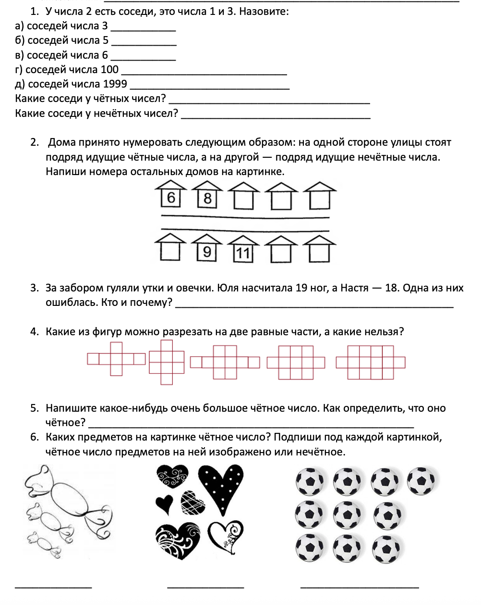

Un outil qui change la façon de préparer ses cours — entre enthousiasme et précautions
Olesya Inozemtseva
Mai 2026
Au programme
Quelle IA et pourquoi ?
Mes 4 usages au quotidien
Un exemple concret : avant / maintenant
Les limites et les précautions
Conclusion
Quelle IA j'utilise ?
Il existe plusieurs IA conversationnelles :
ChatGPT · Claude · Gemini · Mistral
J'utilise Claude (développé par Anthropic) — efficace en plusieurs langues, garde bien le contexte sur de longues conversations.
Mes 4 usages
👶 Pour les petits
Inventer des problèmes avec une histoire
Créer des sites interactifs personnalisés

🎓 Pour les grands
Analyser les devoirs, repérer les erreurs récurrentes
Déterminer la stratégie : réviser, rattraper
Préparer des fiches théoriques propres
Gagner du temps sur le « technique »
Avec les petits
Exemple de demande :
Voici un exemple d'exercice que je travaille avec mon élève de 7 ans. Écris-moi 6 problèmes sur des dinosaures pour entraîner cette notion.
→ En quelques secondes : 6 exercices drôles et adaptés à la notion étudiée. → Sans l'IA : un seul problème générique en 10 minutes.
Avec les ados
Je gagne du temps sur le technique…
Tableaux récapitulatifs
Schémas, formules mathématiques
Mise en page propre
Analyse statistique des erreurs
…pour me concentrer sur le pédagogique : expliquer, motiver, adapter.
Avant l'IA — un cours typique

Des énoncés sur papier, en noir et blanc. Efficaces, mais peu motivants pour un enfant de 7 ans.
Avec l'IA — ma demande à Claude
Mon prompt :
Crée un site interactif avec un comptage de points et la saisie des réponses, sur le thème de la numération, pour des élèves de 7 ans. Voici des exemples d'exercices que tu peux utiliser : [fichier joint avec les énoncés que j'utilisais avant].